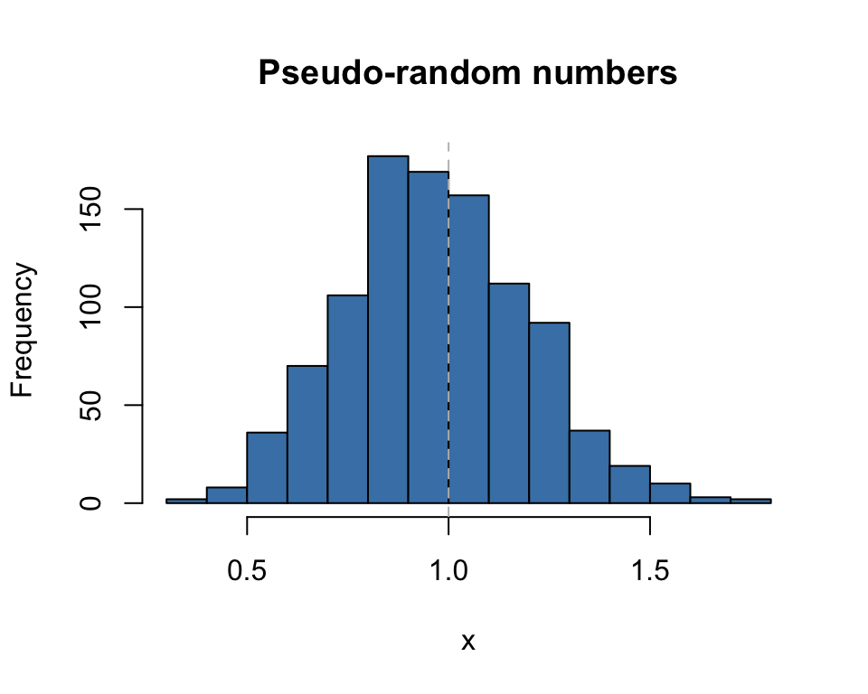

K-distribution.RmdSuppose \(X \sim \chi^2_m\) is a Chi-squared random variate on \(m\) degrees of freedom. Then the distribution of \[Y = \sqrt{\frac{X}{m}}\] is the Kay distribution on \(m\) degrees of freedom, written as \[Y \sim K_m.\] Its density is \[f(y) = \left\{\begin{array}{lcl} \frac{m^{\frac{m}{2}} y ^{m-1} e^{-\frac{1}{2} m y^2}} {2^{\frac{m}{2}-1} \Gamma(\frac{m}{2})} &~~~& \text{for} ~~ 0 \le y < \infty \\ &&\\ 0 && \text{otherwise}. \end{array} \right. \]
The \(K_m\) density has some very attractive features over the \(\chi^2_m\) density:
As m increases, Km has better properties
These values were calculated using the dkay(...) density function. For example, dkay(1.0, df=10) = 1.7546737.
Perhaps the most obvious relation between a normal random variate and a \(K_m\) is that if \(Z \sim N(0,1)\), then \(|Z|\sim K_1\), the half-normal.
More important in applications is that distribution of the estimator of the sample standard deviation is proportional to a \(K_m\). To be precise, if \(Y_1, \ldots, Y_n\) are independent and identically distributed as \(N(\mu, \sigma^2)\) random variates, with realizations \(y_1, \ldots, y_n\) and the usual estimates \(\widehat{\mu} = \sum y_i /n\) and \(\widehat{\sigma} = \sqrt{\sum (y_i - \widehat{\mu})^2/(n-1)}\), then the corresponding estimators \(\widetilde{\mu}\) and \(\widetilde{\sigma}\) are distributed as \[ \widetilde{\mu} \sim N(\mu, \frac{\sigma^2}{n}) ~~~~~\text{and} ~~~~~ \frac{\widetilde{\sigma}}{\sigma} \sim K_{n-1}. \] The latter shows that \(K_m\) is used for inference (e.g. tests and confidence intervals) about \(\sigma\).
This is handy because the \(K_m\) quantiles vary much less than do those of \(\chi^2_m\). For example, condider the following table of the cumulative distribution.
| df | p=0.05 | p=0.5 | p=0.95 |
|---|---|---|---|
| 1 | 0.0627068 | 0.6744898 | 1.959964 |
| 2 | 0.2264802 | 0.8325546 | 1.730818 |
| 3 | 0.3424648 | 0.8880642 | 1.613973 |
| 4 | 0.4215220 | 0.9160641 | 1.540108 |
| 5 | 0.4786390 | 0.9328944 | 1.487985 |
| 6 | 0.5220764 | 0.9441152 | 1.448654 |
| 7 | 0.5564364 | 0.9521263 | 1.417601 |
| 8 | 0.5844481 | 0.9581311 | 1.392269 |
| 9 | 0.6078297 | 0.9627987 | 1.371090 |
| 10 | 0.6277180 | 0.9665308 | 1.353035 |
| 15 | 0.6957463 | 0.9777136 | 1.290886 |
| 20 | 0.7365735 | 0.9832962 | 1.253205 |
| 25 | 0.7644974 | 0.9866425 | 1.227232 |
| 30 | 0.7851255 | 0.9888719 | 1.207932 |
| 35 | 0.8011601 | 0.9904636 | 1.192858 |
| 40 | 0.8140839 | 0.9916570 | 1.180662 |
Unlike the \(\chi^2_m\) distribution, the quantiles in this table stabilize, allowing \(1 \pm 0.20\) being not a bad rule of thumb for a \(90\%\) probability of the ratio \(\widetilde{\sigma}/\sigma\).
These values were calculated using the qkay(...) quantile function. For example, qkay(0.05, df=5) = 0.478639. These would be used to construct interval estimates for \(\sigma\).
To get observed significance levels, the cumulative distribution function pkay(...) would be used. For example, SL = 1- pkay(1.4, df=10) = 1 - 0.9667287 = 0.0332713.
For the standard normal theory, the Student \(t_m\) distribution can be defined as follows. If \(Z \sim N(0,1)\) and \(Y \sim K_m\) is distributed independently of \(Z\), then the ratio \[T=\frac{Z}{Y} = \frac{N(0,1)}{K_m} = t_m.\] For the estimators from the above model \[\frac{\widetilde{\mu} - \mu} {\widetilde{\sigma}} = \frac{ \frac{\widetilde{\mu}-\mu} {\sigma} } {\frac{\widetilde{\sigma}} {\sigma} } = \frac{N(0,1)}{K_m} = t_m\] is used to construct interval estimates and tests for the value of the parameter \(\mu\).
As with every other distribution in R four functions are provided for the \(K_m\) distribution. These are
dkay(x, df=m, ...) which evalutes the density of \(K_m\) at \(x\),pkay(x, df=m, ...) which evalutes the distribution of \(K_m\) at \(x\),qkay(p, df=m, ...) which evalutes the quantile of \(K_m\) at the proportion \(p\),rkay(n, df=m, ...) which generates \(n\) pseudo-random realizations from \(K_m\).The parameters in the ellipsis include a non-centrality parameter. All functions rely on the corresponding \(\chi^2_m\) functions in base R.
We briefly illustrate each below.
rkay(n, df, ...)
x <- rkay(1000, df=10)
hist(x, col="steelblue",
main="Pseudo-random numbers", xlab="x")
abline(v=1.0, lty=2, col="grey")